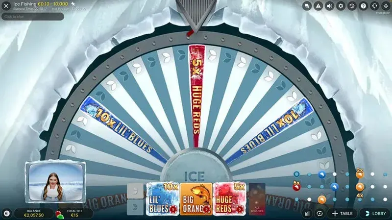

Guides
Ice Fishing Bonus Rounds: What Each One Is Actually Worth
The wheel has four bonus segments and they do not pay the same. Here is what each triggers, how often it lands, and which one carries the game's headline numbers.
🔞 18+ only · Real-money gambling

Ice Fishing is a live game show, so the visible wheel is the whole paytable. Every segment is printed on it, the presenter spins it in front of you, and the bonus rounds are the only place where the large multipliers live.
The four bonus segments
Landing a bonus segment moves the table into a separate round with its own rules. The base wheel numbers pay out immediately; the bonus rounds do not.
What each one does
Catch bonus — the most frequent trigger, and the smallest average return.
Multiplier bonus — applies a fixed multiplier to the next base result.
Deep freeze — a persistent-state round; where most of the volatility sits.
Jackpot spin — rare, and where the game's advertised maximum comes from.
Frequency against payout
Segment | Relative frequency | Where the value sits |
|---|---|---|
Catch bonus | Common | Small, steady |
Multiplier bonus | Regular | Medium |
Deep freeze | Uncommon | High variance |
Jackpot spin | Rare | The headline number |
Every segment is part of the same published RTP. A rare bonus is not a better bet — it is the same bet with the returns bunched into fewer rounds.
Reading a session honestly
Count bonus triggers, not wins — that is the number the wheel actually controls.
Judge the session over the base game; bonuses arrive too rarely to average out.
Ignore the results history on screen. Past spins do not weight the next one.
Set a stop before the first spin, not after the third bonus.
The round flow is easier to follow once you have watched a few — see the demo and gameplay walkthrough.